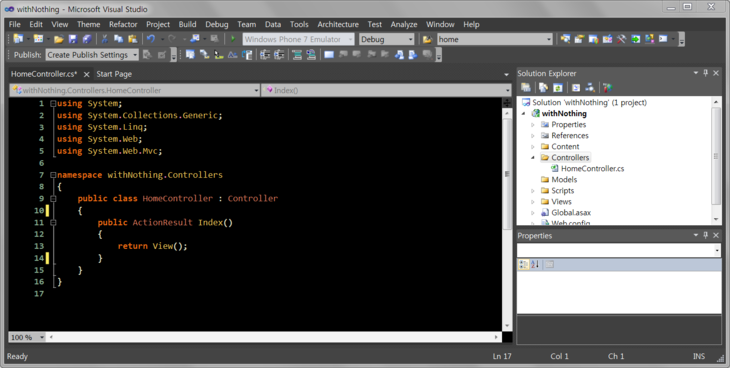
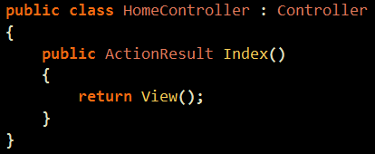
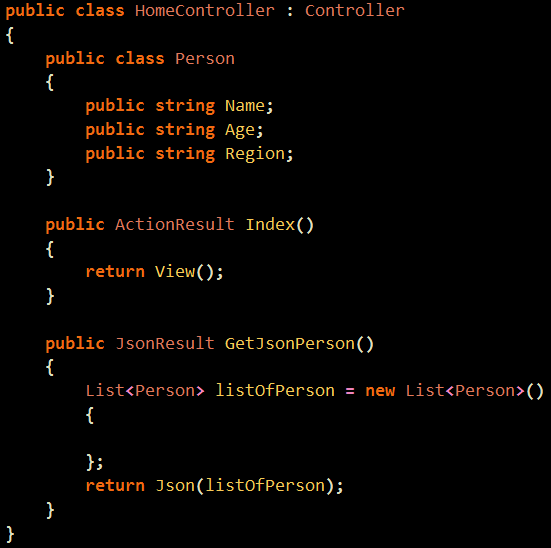
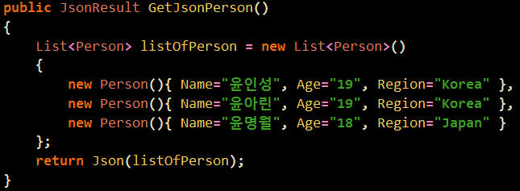
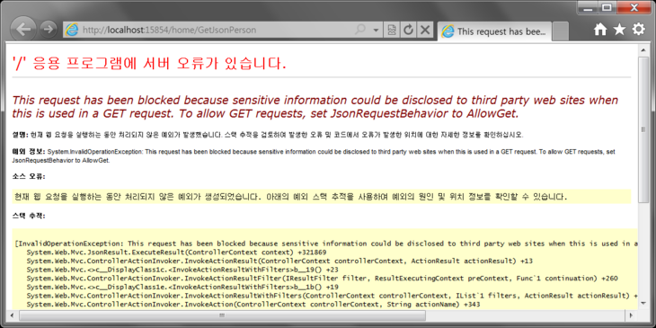
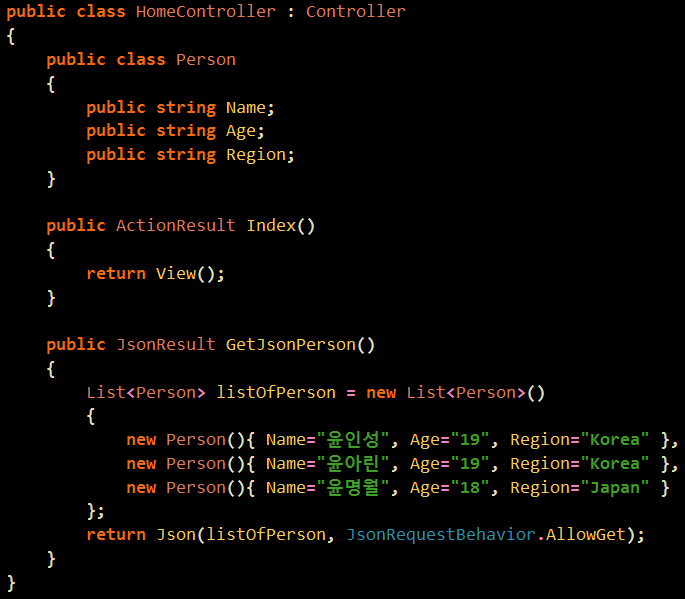
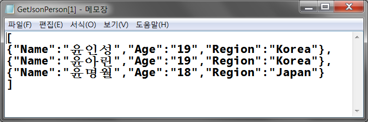

우선 HomeController에서 간단하게 수정을 해주도록 합시다.

간단하게 이너클래스를 만들었구요.
『JsonResult』를 리턴하는 액션을 만들었답니다.
"ActionRsult 가 아니네요 .. ?"
『JsonResult가 ActionResult를 상속받기 때문에 ActionResult로 쓰셔도 됩니다.』
즉, GetJsonPerson()이라는 녀석이 "액션"이라는 것만 일단 기억해주시기 바랍니다. 'ㅁ'
간단하게 모델과 관련된 클래스와 리스트를 만들구요.

리스트 안에 데이터를 넣어주었답니다.
실제 상황이라면 데이터베이스에서 자료를 가져오는 부분이 되겠지요 ㅎㅎ

그런데 실행을 해서 해당 액션으로 가면 다음과 같이 뜹니다.
Get 은 접근 못한다고 합니다.

AllowGet을 해주시면 Get으로도 접근이 된답니다.

그런데 실행을 하면 View() 나오는 것이 아닙니다.
상콤하게 그냥 JSON데이터가 나온답니다.

오늘 강의의 포인트라면 실질적으로 웹 페이지가 보이지 않아도
그녀석이『액션』이라는 것입니다.
음, 실체가 없어도 느낄 수 있어야 한다는 좋은 교훈을 주는군요. (프로그램 속에서 철학을 하나하나 발견해가는 ...)